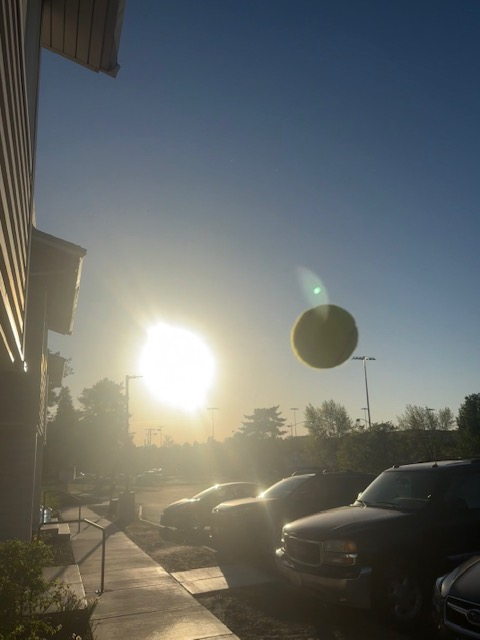

When playing outdoors there is a very real chance that weather will affect your game. The serve is no exception to this. When serving, you want to account for what weather you have. If the sun is very bright, you may want to change your serve so that the sun can stay out of your eyes. Or, if it is windy, you may want to adjust which serve you do based on the direction of the wind. Understanding what works given your current conditions will give you a huge advantage, unless you are playing indoors!

This shows how the ball can elipse the sun when serving. You can see how much the sun distracts you from the ball. This is why you need to be aware of where the sun is.
As funny as it is the best tip I can give you is to be sure to bring proper attire. I recommend always carrying around sunglasses and something to warm your hands so that you can still hold the racket as best as possible.
A common mistake is thinking that there is only one correct serve for each weather condition. Maybe one serve will give you an advantage, but you need to keep in mind what works for you. Additionally, if you switch it up from the norm you may catch the other person off guard for an easy point.